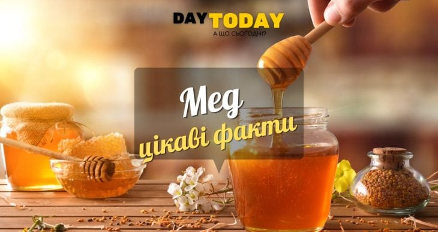
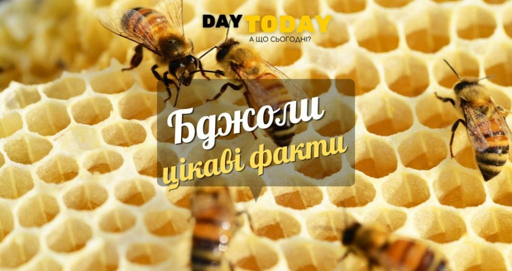

Цікаві факти про мед
Мед – смачний і натуральний підсолоджувач, яким люди насолоджуються вже тисячі років. Вироблений працьовитими бджолами, мед є не лише продуктом харчування, але й захоплюючою речовиною, з якою пов’язано багато цікавих фактів. Мед називають “рідким золотом природи”, а процес його виробництва “природною магією”.
Зміст
-
Мед – це чарівна речовина, яку виробляють лише медоносні бджоли. Це єдиний продукт харчування, який містить всі необхідні для підтримки життя речовини, включаючи воду.
-
Мед на 80% складається з цукрів і на 20% з води. Це суміш простих цукрів – глюкози і фруктози, які надають йому солодкого смаку.
-
Мед багатий на різноманітні вітаміни, необхідні мінерали, антиоксиданти та амінокислоти. Він також є антимікробним засобом і може ефективно використовуватися при невеликих опіках або подряпинах, прискорюючи загоєння ран.
ВИРОБНИЦТВО МЕДУ
-
Процес виробництва меду є свідченням працьовитості бджіл та є неймовірним дивом природи.
-
Одна бджола може виробити близько 8 г меду за все своє життя.
-
Щоб зробити 0,5 кг меду, бджоли в колонії повинні відвідати 2 мільйони квіток і пролетіти близько 90 000 км. Це еквівалентно тому, щоб двічі облетіти навколо земної кулі! Під час кожного обльоту бджола відвідує 50-100 квіток, щоб зібрати нектар.
ВУЛИК ТА ЙОГО МЕШКАНЦІ
-
Кожен вулик може вмістити близько 50 000 бджіл, які разом важать трохи більше 5 кг.
-
Матка, єдина бджола у вулику, яка відкладає яйця, може відкладати до 2 000 яєць на день. Життя матки присвячене розмноженню, і вона залишає вулик лише один раз у житті для спарювання.
-
Робочі бджоли, тобто самки, які не розмножуються, виконують всю роботу у вулику. Вони відповідають за збір нектару, виробництво меду та обслуговування вулика.
-
Читайте нашу статтю: Цікаві факти про бджіл 
-
УНІКАЛЬНІ ВЛАСТИВОСТІ МЕДУ
- Мед відомий своїм довгим терміном зберігання. Кажуть, що він ніколи не псується. Але це не зовсім так.
- Згідно зі споживчими стандартами термін придатності меду при правильному зберіганні становить 8–12 місяців залежно від сорту.
- Хоча віск тонкий і делікатний, структура гексагональних комірок може утримувати величезну вагу.
-
РОЛЬ МЕДУ В РАЦІОНІ БДЖІЛ
- Мед і пилок – це будівельні цеглинки бджолиного раціону.
- Основна їжа бджолиної матки – це спеціальна суміш меду та пилку, яка називається “маточне молочко”.
- Уникайте сторонніх запахів. Вони не повинні потрапляти до банку з медом. Для зберігання можна використовувати посуд з нікелю, кераміки, емалі з кришкою, що щільно закривається.
- Використовуйте скляні ємності. Бажано розділити мед на кілька маленьких банок, оскільки кожне відкриття призводить до потрапляння шкідливих бактерій та повітря, що скорочує термін зберігання.